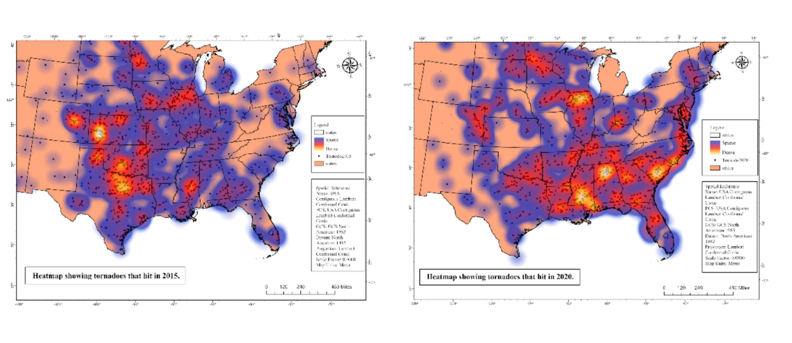

Recent tornado activity has raised growing concern that the region historically known as Tornado Alley — centered in the U.S. Midwest — may be shifting or expanding eastward, with increasing numbers of tornadoes reported in eastern and southern states. This project investigates that hypothesis using 70 years of NOAA tornado data, applying both heatmap visualization and space-time hotspot analysis to identify and track spatial changes in tornado activity from 1950 to 2020.
Using initial touchdown point data from NOAA's National Weather Service Storm Prediction Center, the team mapped tornado activity across the contiguous United States and analyzed how geographic patterns have changed over time — with particular focus on whether traditional Tornado Alley boundaries have held or expanded.
Tornado touchdown point data spanning 1950–2020 was sourced from NOAA's National Weather Service Storm Prediction Center. The dataset was broken down and visualized through a series of heatmaps in 5-year increments from 2000 to 2020 to illustrate spatial change over time. To further quantify the shift in tornado activity, a space-time cube hotspot analysis was performed in ArcGIS Pro — organizing data from 1950–2020 in 5-year increments, with each spatial bin covering a 300 km radius. This approach allowed the team to identify both persistent and emerging hotspot clusters across the U.S.
After showcasing the data through multiple mapping techniques, the study concludes that Tornado Alley is expanding rather than simply relocating. Activity in the traditional Midwest corridor remains present, but there has been a tremendous increase in tornado events across eastern and southern states. These findings have important implications for emergency preparedness and infrastructure planning in regions that historically have not been considered high-risk tornado zones.